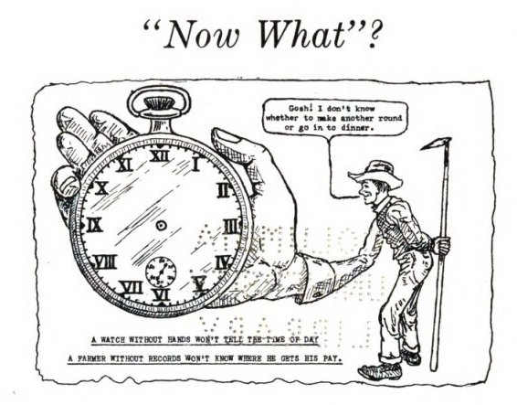

Speculative Dairy Visualizations
Holstein-Friesian World 1961-12-25: Vol 58 Iss 24: 30.
https://archive.org/details/sim_holstein-world_1961-12-25_58_24/page/30/mode/2up?q=%22gallant+topsy%22
Since at least the 1990s, agriculture has become increasingly datafied and densely mediated. While new digital tools for extracting and generating value from land, resources, and information (drone surveillance, livestock sensors, machine learning-driven analytics, integrated data streams, et cetera) lay bare the farm as a "datafied socio-natural site," emerging studies of "farm media" seek to understand how agriculture has always operated through mediation.
Crucially, farm media considers how the farm itself has served as the central "medium for the reproduction of society" (Kish and Peters 2023). Indeed, agriculture mediates land and people through soil by converting biomass into demographic growth. And since the early twentieth century, the American family farm has also served as the symbolic reproductive center of heteronormative, white, settler society.
Following this multivalent sense of farm media, this project highlights livestock breeding as paradigmatic of the agricultural articulation of biological and representational media through reproductive control.
In the United States, dairy cattle breeding has long been exemplary of data-driven reproduction of both life itself and the social order.
From the state-led quantification, recording, and computation of milk yields and butterfat in the early twentieth century to the tracking of individual bovine genetics to supply quantitative genetic breeding in post-War period to genomic breeding in the twenty-first century, the history of dairy cattle breeding has been a history of data visualization.
How did cows become data?
This multimodal project traces dairy cattle media across shifting representational regimes from the early twentieth century to the present, a period roughly corresponding to the development of our fixation on graphs, charts, and information systems in the "Information Age" (Orit Halpern 2014).
Organized around three speculative visualizations, what follows is an exploration of critical making as method. I take the hyper-visualization of highly documented dairy cattle in paper technologies and digital databases as an occasion to think differently about both data and the visual.
Making cows into data was part of a calculated, state-led project that enmeshed rural people, the state, and private capital.
The 1914 Smith-Lever Act established the Cooperative Extension Service as the right arm of the USDA. Designed to insinuate state and corporate agents into rural life, the extension service enrolled rural people in the USDA's vision of capital-intensive agriculture. The progressive era notion of cooperation ideated not only “every farm a factory” (Fitzgerald 2003) but every farmer a businessman. Record keeping was key. And to keep records, farms needed to generate and define data.
Dairy farmers had a head start. Informal weighing of milk and testing of fat used by some dairy farmers beginning in the late nineteenth century was institutionalized under cow testing associations by 1910. Extension agents who assumed leadership after 1914 intensified pressure on farmers to keep records of milk yields, butterfat, feed, and costs. In 1927 the Cow Testing Association became known as the Dairy Herd Improvement Association, a change that reflected visions of technocratic control that revalued dairy as data and data as capital.
Here, "farm media" encompass record-keeping documents and paper technologies (ledgers, account books, etc) as well as the representation of animal byproduct as data.
Another layer of mediation emerges through the tactics by which the USDA elicited lay participation. County fair exhibits were crucial recruitment venues.
Many early exhibits are documented in great detail in Extension Service Office of Exhibits documents, but not pictured. The "Cow Testing" and "Farmer Record Keeping" exhibits from 1925 (the period when extension agents intensified record keeping pressures) described below highlight the spatial coordination of key rhetorical strategies.
Farm records: a summary of the exhibit. United States. Extension Service. Office of Exhibits. [Washington, D.C.] : United States Department of Agriculture, 1925.
https://archive.org/details/CAT31449830/page/n3/mode/2up
Cow testing: a summary of the exhibit. United States. Extension Service. Office of Exhibits. [Washington, D.C.] : United States Department of Agriculture, 1925.
https://archive.org/details/CAT31449927/page/n1/mode/2up
As a research methodology, visualizing this descriptive "data"--dimensions, object, presentation, and outcome descriptions--demands close attention to the rhetorical strategies of expert officials increasingly insinuated into rural life in the 1920s and the state-led vision of dairy farm record keeping as a masculine pursuit of financial management.
The clock without hands was one of the central metaphors and imagery used to underscore the irrationality of farming without records. It also speaks to the temporal regimes of industrial farming and the way animal bodies were reconfigured to match yearly reproductive cycles of growth and reproduction.

Paying close attention to these material forms offers ways to tune into the affective economies through which rural people, and youth in particular, were brought into "financial intimacy" (Rosenberg 2017) with the designs of urban elites and state technocrats through the Extension Service.
Using farm accounts to find the leaks in the farm business, by J.C. Neff ...
https://babel.hathitrust.org/cgi/pt?id=nnc1.cu04139496&seq=6
Cow records were not just for improving the efficiency of individual dairy farms. The DHIA required farmers with registered cows to report their data to appointed herd supervisors using set forms supplied by the USDA.
With a growing centralized statistical database, scientists at land-grant universities and private research laboratories, business men, and farmers worked to develop new ways to improve dairy cows health, production, and conformation (or physical appearance). In the 1930s, index breeding, using a co-efficient developed by population geneticist Sewall Wright, became widely used to determine a bull's value. Predictive calculations of bovine value reversed the temporalities of pure-breeding, which determined value through deep ancestry and bloodlines recorded in pedigree charts. Index breeding instead aligned value with production schedules and how reliably a breeding bull was proven to pass on specific traits like fertility and milk production.
Index breeding also remade individuated cattle themselves—beyond their bodily byproducts—into data points.
In the 1930s, the USDA developed a unique series of ear-tags to identify cows tested by Dairy Herd Improvement Associations.
Ear tag codes corresponded to datastring on punch cards used to calculate herd value through electronic tabulating machines.
Punch card tabulations show the tightening weave of Taylorist efficiency with dairy production. Breeders like the geneticist Hubert Goodale looked to the world of business management to breed cows, using employee punch cards as a template for cow data entry.
BG61 Hubert Dana Goodale Papers Series II, "Tabulating Machine Company #1. American Philosophical Society Archives
"Edison Lampworks Employee Record"
Reformulated punch card--from employee to cow; labor synchronized to yearly lactation schedule
White Ammunition, by Blake (B.K. Inc), 1942
Industrial film, Prelinger Archive, Internet Archive. USA. https://archive.org/details/WhiteAmm1942
| Sorting and tabulating of cow records on electric machines, 1925. |
https://www.ars.usda.gov/ARSUserFiles/80420530/images/history/1925.jpg
At the DHIA, as elsewhere, women were the first "computers."
In 1951, two Utah business men developed the first data processing center for DHIA records; other institutions followed suit. Extension dairymen from a number of institutions developed a system using an IBM-650 electronic computer.
DHIA records are now housed within the Council on Dairy Cattle Breeding national cooperator database, advertised as the world's largest animal database. 80 years of DHIA data commingle with genomic information since the sequencing of the cattle genome in 2009 and resulting frenzy for greater precision in through genomic selection.
0MHOCAN000014360748HO840003220234128 HOCAN000013808014HOCAN00001436074820220707B20221018G013PB000000PROGENESIS BACHELOR
Reading a datastring, or cow ISBNs
https://uscdcb.com/database-stats/
Registered dairy cattle are extremely well documented. Virtually any dairy cow or bull featured in a trade journal or breeding magazine such as Holstein-Friesian World or Hoard's Dairyman from the 1930s to present is searchable in the CBCB database by animal ID codes.
https://webconnect.uscdcb.com/#/queries
You might even be able to find archival records of different kinds of bodily products--not milk, but semen, embryos, eggs, white blood cells, DNA, and other tissues stored in the USDA's Animal Germplasm Repository. Some of these cryopreserved specimens, reserved for scientific, state, and industry research, date to the 1950s and 60s, when dairy cattle breeders were at the vanguard of cryobiology science--preserving living tissues indefinitely at the temperature of liquid nitrogen--to expand exports on the artificial breeding market.
Housed in a research laboratory in Colorado, the repository is connected to a larger "information system" that links genetic data across the USA, Canada, and Brazil, the Animal Germplasm Research Information System.
https://agrin.ars.usda.gov/main_webpage_dev/ars?language=EN&record_source=US
The database’s web interface consists of a series of drilldown menus—moving from species, to breed, to line, to individual—to investigate a particular population (filterable by “tissue type”), providing at each level visualizations of the data that appear highly flexible and comprehensive (e.g. charts detailing inventory growth; maps displaying the geographic distribution of samples).
Limiting a search to just Holstein breed dairy cattle renders over 6000 entries that can be mapped and visualized in a number of ways. For example, by breeder address in an interactive map:
https://agrin.ars.usda.gov/tax_inv_drilldown_page_dev/map_tax?germplasm_type=&hide_side_bar=Y&level=Line&record_source=US&taxonomy_id=1238
Numerical data is not the only kind available; clicking a link to “more info” in the cells of spreadsheets generated when exploring the database leads to a separate pop-up with individual cattle profiles including birthdates, names, breeders, donors, pedigree charts, pictures, and descriptions of animals.
These qualitative or "phenotypic" data resist aggregate visualization. While there are hundreds of pictures of individual Holsteins, the photos cannot be downloaded with the entries and never can more than one cow be viewed simultaneously.
They thus offer possibilities for reading and making data visualizations that are, in Johanna Drucker's terms, "nonrepresentational" in that they do not presume to "serve as surrogates for an already existing object” (69).
Pages from a speculative, transhistorical Holstien herd book
https://agrin.ars.usda.gov/tax_inv_drilldown_page_dev/animal_details?animal_id=14217&come_from=Animal+Level&germplasm_type=&hide_side_bar=Y&record_source=US
Holstein-Friesian World 1961-11-10: Vol 58 Iss 21, 1
https://archive.org/details/sim_holstein-world_1961-11-10_58_21/mode/2up?q=1265166
These pages follow the traces of well-known Holstein sires born in the 1940s to 1960s across media: from contemporary rendering in CDCB and USDA databases to midcentury advertisements in trading journals.
https://agrin.ars.usda.gov/tax_inv_drilldown_page_dev/animal_details?animal_id=14217&come_from=Animal+Level&germplasm_type=&hide_side_bar=Y&record_source=US

https://archive.org/details/sim_holstein-world_1957-12-28_54_24/page/32/mode/2up
Holstein-Friesian World 1957-12-28: Vol 54 Iss 24, 32.
https://archive.org/details/sim_holstein-world_1958-01-11_55_1/page/n1/mode/2up?q=1298430
Holstein-Friesian World 1958-01-11: Vol 55 Iss 1, 3.
Sometimes these pathways tell stories about the bulls' lives—which breeding corporations they were sold to, the cults of personality they garnered, the sometimes millions of progeny they produced.
Following the lives and afterlives of Inka Reflector and Rock River Count (or, HOUSA000001298430 and HOUSA000001265166) exposes us to the increasingly disjointed and collapsed temporalities of post-industrial breeding after the mid-century.
Whereas industrial logics synchronized animal reproductive cycles into industrial time-discipline (in part through biological manipulation and in part through paper technologies like employee punch cards), post-industrial breeding entailed different temporal regimes.
Applied widely starting in the 1940s, artificial insemination created new different scales of distance between bulls and cows previously in direct contact. Not only did technologies like the inseminator rod and new human partners mediate reproduction, but new transportation infrastructures were needed to quickly transport and preserve the viability of fresh semen. Artificial breeding cooperatives in the US even developed a special parachute to send semen from overhead planes to local farms.
https://www.wisconsinhistory.org/Records/Article/CS2693
Bull semen parachute, 1944
Wisconsin Historical Museum object #1993.7
Moreover, human inseminators and various implements like the inseminator rod mediated the sexual act--an act of technologically-mediated interspecies intimacy.
If artificial breeding expanded the spatial scale of reproduction, cryopreservation altered its temporality. The indefinite freezing of semen means not only that hyper virile bulls can father millions of progeny, but that these progeny can be born of bulls long dead.
"Breeding for Profitable Dairy Cattle Through Importing Frozen Semen of the Best Progeny-Tested Sires." American Breeders Service, Chicago Illonois, 1957. Box: G61, Hubert Dana Goodale Papers, "Breeding for Profitable Diary Cattle," 1900 1700 M.S. American Philosophical Society Archives.
Since 2009, genomic analysis determines bull value at a molecular level, conflating the future-oriented temporality of index breeding with the history-oriented temporality of pure breeding by instantaneously testing both.
Early milk yield and farm record-keeping lead to a new breeding system out of which a new subdivision of the dairy industry emerged, one that was only obliquely about milk production. Milk as data became subservient to cows as data as cattle "improvement" developed new cultural and economic ends.
From the 1950s onward, cattle data became key to a new marketing industry to sell genetic traits carried in commodified bull semen.
Full-time cattle photographers are even part of this advertising industry.
Cattle photography
Dairy Expo Picture taking session. Kathy DeBruin. Circa 1986
While dairy data and record-keeping emerged through coordinated state efforts, genetic data used to sell cattle operates increasingly through the market.
Visual reproduction of cattle images and genetic data add another biopolitical layer. Primarily these ads have coordinated distances and proximities between humans, cattle, technology. Remixing them through creative collage suggests different tactile registers of reproducible images, bodies, and data. The behind-the-scenes video of one of one shoot points to all kinds of non-visual senses, from the auditory (deBruin swearing in frustration, the sounds made by the decoy who is trying to elicit some unknown action) to the tactile, how the handlers manage the sometime evasive and obstinate cattle.
Mediation through private industry advertising
Collage... tbd
Genomics - massive statistical database makes genomic analysis possible for dairy cattle in particular
[[Conclusion here]]
Holstein-Friesian World 1961-03-25: Vol 58 Iss 6, 711.
https://archive.org/details/sim_holstein-world_1961-03-25_58_6/page/92/mode/2up?q=1265166
Hoard's Dairyman 1956-10-10: Vol 101 Iss 19: 968.
https://archive.org/details/sim_hoards-dairyman_1956-10-10_101_19/page/968/mode/2up
Text
Aligning database with ads for cattle
Holstein-Friesian World 1961-12-25: Vol 58 Iss 24
https://archive.org/details/sim_holstein-world_1959-06-13_56_11/page/2/mode/2up?q=1298430&view=theater
Holstein-Friesian World 1959-06-13: Vol 56 Iss 11, 3.